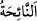

“Hacıların ruhlarıdır.” dedi.
Tekbir sesleri işittim. “Onlar gâzîlerdir.” dedi.
Tesbih sesleri işittim. “Onlar peygamberlerdir.” dedi.
Sâlih kulların kasırlarını gördüm. Arzın yedi kat altında da olsa cehennem bana arz
olundu. Kapısında şöyle yazılı idi: “Muhakkak cehennem, onların hepsine
vâdolunan yerdir.” (el-Hicr, 15/43)
Peygamber (s.a.) şöyle buyurdu: “Bir melek gördüm, yüzüme gülmedi. “Ey kardeşim
Cebrâil! Bu kim?” dedim. “Cehennemin muhafızı Mâlik’tir. O yaratıldığı günden beri
hiç gülmedi. Eğer bir kimseye gülseydi sana gülerdi.” diye karşılık verdi. Sonra
Cebrâil (a.s.) ona: “Ey Mâlik! Bu Muhammed’dir. Ona selâm ver.” dedi. O da bana
selâm verdi. Nâil olduğum şeref ve ikramdan dolayı beni tebrik etti.”
Cehennem muhafızı Mâlik, Rasûlullah (s.a.)’de hissettiği korkunun zâil olması için
O’nun ve O’na tâbi olan sâlih kulların cehennemden kurtulacaklarına işâret için selâmla
başlamıştır.
Rasûlullah (s.a.) devamla buyuruyor ki: “Bütün derekeleriyle cehennemi bana
arzetmesini ondan taleb ettim. Bana cehennemdeki her şeyi gösterdi. Orada Allah’ın
gazâb ve ikabını gördüm. Şâyet taş ve demir oraya atılsa cehennem onları yiyip
öğütür. Orada leş yiyen bir topluluk gördüm. “Bunlar kim, ey Cebrâil!” dedim.
“Onlar insanların etlerini yiyenlerdir (gıybet edenlerdir.)” dedi.
Dilleri enselerinden çıkarılan başka bir topluluk gördüm. Cebrâil’e: “Onlar kim?”
diye sordum. “Onlar Allah’ın ismiyle yalan yere yemin edenlerdir.” dedi.
Kadınlardan saçlarından asılmış bir topluluk gördüm. “Bunlar kim?” dedim.
“Onlar mahremi olmayan erkeklere karşı örtünmeyenlerdir.” dedi. Yine kadınlardan
elbiseleri katrandan olan bir topluluk gördüm. “Bunlar kim?” dedim. Cebrâil:
“Bunlar, ölülerin arkasından ağıt yakan kadınlardır (en-nâihât).” dedi.”
en-Nâiha; ölünün arkasından ahlâkını ve iyiliklerini sayarak ağlayan kadın
demektir.
Mi‘rac hadisi cennet ve cehennemin şu an yaratılmış olduğuna delâlet eder. Çünkü
insan sevabın yaratıldığını bilince, onu elde etmek için ibâdete gayret eder. Azabın da
yaratıldığını bilince, ondan kurtulmak için günahlardan kaçınır. Yine sahih haberde
vârid olmuştur ki; cennetler etrâfı tepelerle çevrilmiş boş arazilerdir. Onların îmarı,
daha önce de geçtiği gibi amellerledir.
Hz. Peygamber (s.a.) Mekke’den Beytü’l-makdis’e geceleyin Burak’la götürülmüştür.
Beytü’l-makdis’ten dünya semâsına da mi‘racla çıkarılmıştır. Oradan yedinci kat
semâya meleklerin kanatları üzerinde, oradan Sidretü’l-müntehâ’ya Cebrâil (a.s.)’ın
kanadı üzerinde, oradan da arşa refref üzerinde çıkarılmıştır. Öyle görünüyor ki inişi de
yine aynı tertib üzere olmuştur.
Ehlullahın büyüklerden biri der ki: “Rasûlullah (s.a.), hangi safhada olursa olsun
Sidretü’l-Müntehâ’ya kadar Burak üzerinde götürülmüştür.”
Rasûlullah (s.a.) dünya semâsına inince aşağı tarafına baktı. Bir kargaşa, duman ve